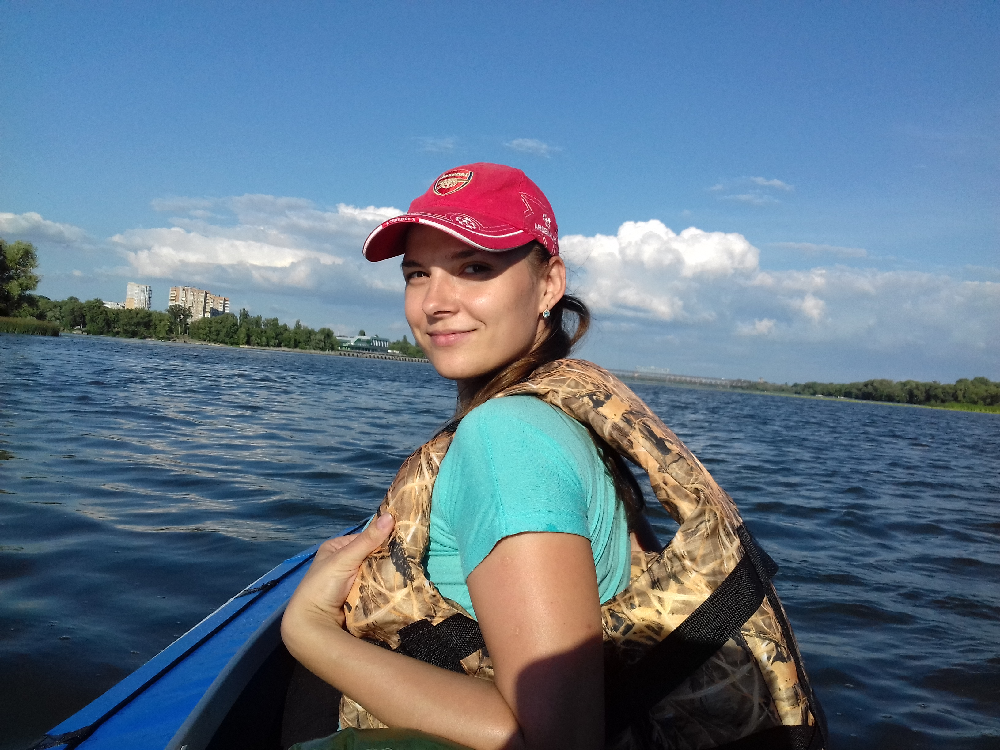

У вільний час я майже завжди займалася спортом. У шкільні та студентські роки відвідували танцювальні гуртки, але зараз віддаю перевагу більш спокійним заняттям, які допомагають підтримувати тіло у тонусі, розслабляють м’язи та розвантажують спину. Тому я відвідую групу фітнесу з елементами розтяжки.
Я люблю читати художню літературу. Більше подобається паперова книжка у руках, яка створює особливу атмосферу, ніж електронна версія на телефоні. Читання дозволяє мені заглибитися в інший світ, емоції героїв та зняти напруження після робочого дня.
Також я люблю дивитися фільми різних жанрів, таких як комедії, бойовики, детективи та драми. Коли настає вечір, я вибираю фільм залежно від свого настрою, щоб отримати задоволення від перегляду та зануритися в цікаву історію.
У своєму житті пробувала багато різних речей, але нічого з них не перетворилося на повноцінне хобі. Проте, я завжди відкрита до нових вражень і можливостей, що життя пропонує мені.
- 